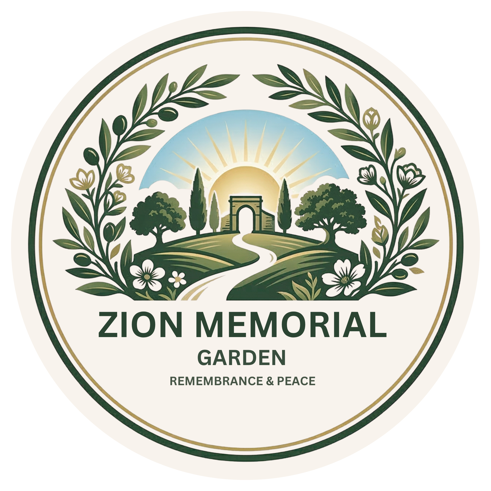
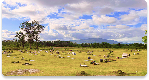
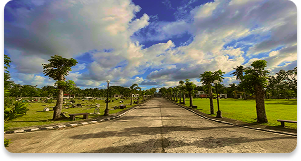

<!-- About Us Popup -->
<div id="aboutPopup" class="page-popup-overlay">
    <div class="page-popup-content">
        <!-- Header -->
        <header>
            <div class="header-content container">
                
                
                <div class="logo-and-links">
                    <nav>
                        <ul>
                            <li><a href="#" class="popup-home-link">Home</a></li>
                            <li><a href="#" class="popup-about-link active-nav">About Us</a></li>
                            <li><a href="#" class="popup-virtual-link">Virtual Tours</a></li>
                            <li><a href="#" class="popup-contact-link">Contact</a></li>
                        </ul>
                    </nav>
                </div>
                <div class="header-buttons">
                    <a href="#" class="btn btn-register popup-register-btn">Register</a>
                    <a href="#" class="btn btn-login popup-login-btn">Login</a>
                </div>
            </div>
        </header>

        <!-- Yellow Line Divider -->
        <div class="yellow-line-divider"></div>

        <!-- Why Choose Us Section -->
        <section class="why-choose-us container">
            <h2 class="section-title">
                <span class="title-left">
                    <span class="title-why">Why</span>
                    <span class="title-choose">Choose</span>
                </span>
                <span class="title-us">Us<span class="question-mark">?</span></span>
            </h2>
            
            <div class="reasons-grid">
                <!-- Row 1 -->
                <div class="reason-card">
                    
                    <h3>1. Professionalism & Integrity</h3>
                    <p>We utilize a Cloud-Based Records System to ensure your family's data and ownership titles are secure, accurate, and easily accessible. You never have to worry about lost paperwork or administrative confusion.</p>
                </div>

                <div class="reason-card">
                    
                    <h3>2. Aesthetic Excellence</h3>
                    <p>Unlike traditional, crowded graveyards, Zion offers a "Garden Concept." Our sprawling green landscapes, uniform marble markers, and manicured gardens create a peaceful, park-like environment that encourages reflection rather than sorrow.</p>
                </div>

                <div class="reason-card">
                    
                    <h3>3. Strategic Location</h3>
                    <p>Situated conveniently in Labo, Camarines Norte, we offer easy accessibility for local residents. Our facility features wide roads and ample parking, ensuring that your visits are stress-free, even during the busiest holidays.</p>
                </div>

                <!-- Row 2 -->
                <div class="reason-card">
                    
                    <h3>4. Financial Security & Planning</h3>
                    <ul>
                        <li><strong>Inflation Protection:</strong> Our pre-need plans allow you to lock in today's prices, protecting your family from future rising costs.</li>
                        <li><strong>Perpetual Care:</strong> We guarantee the lifetime maintenance of your lot. Your investment ensures that the beauty of your loved one's resting place never fades.</li>
                    </ul>
                </div>

                <div class="reason-card">
                    
                    <h3>5. Compassionate Innovation</h3>
                    <p>We are the first in the region to integrate Modern Mapping Technology with traditional memorial services. Whether you are looking for a simple lawn lot or a family mausoleum, our system ensures a seamless transition from planning to interment.</p>
                </div>
            </div>
        </section>
    </div>
</div>
